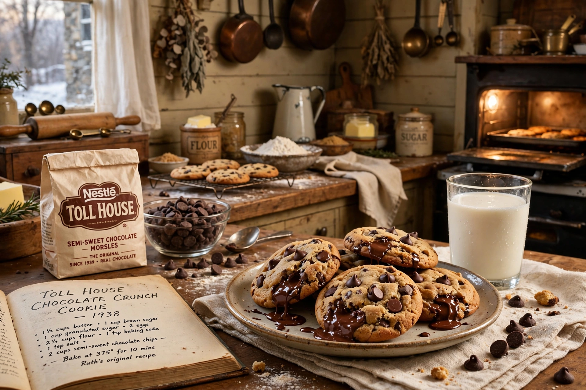

Nestlé Toll House is an American brand of chocolate chips and refrigerated cookie dough owned by Nestlé, named after the Toll House Inn in Whitman, Massachusetts, where Ruth Graves Wakefield invented the chocolate chip cookie.
In 1938 Wakefield, who ran the inn with her husband Kenneth, added chopped Nestlé semi-sweet chocolate to a butter cookie dough, expecting it to melt; instead the pieces held their shape, creating the first chocolate chip cookie. The recipe, published as the Toll House Chocolate Crunch Cookie, became hugely popular. Nestlé acquired the rights to the recipe and the Toll House name in exchange, by legend, for a lifetime supply of chocolate, and began selling Toll House morsels in 1939.
The brand sells semi-sweet, milk chocolate, dark and mini morsels, refrigerated and frozen cookie dough, and baking mixes. The original recipe is printed on the morsels bag.
The Toll House cookie became the archetypal American chocolate chip cookie and Massachusetts' official state cookie.